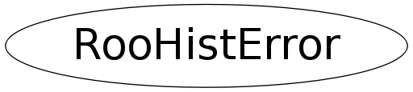

Function Members (Methods)
public:
| RooHistError(const RooHistError&) | |
| virtual | ~RooHistError() |
| static TClass* | Class() |
| static RooAbsFunc* | createBinomialSum(Int_t n, Int_t m, Bool_t eff) |
| static RooAbsFunc* | createPoissonSum(Int_t n) |
| Bool_t | getBinomialIntervalAsym(Int_t n, Int_t m, Double_t& a1, Double_t& a2, Double_t nSigma = 1) const |
| Bool_t | getBinomialIntervalEff(Int_t n, Int_t m, Double_t& a1, Double_t& a2, Double_t nSigma = 1) const |
| Bool_t | getInterval(const RooAbsFunc* Qu, const RooAbsFunc* Ql, Double_t pointEstimate, Double_t stepSize, Double_t& lo, Double_t& hi, Double_t nSigma) const |
| Bool_t | getPoissonInterval(Int_t n, Double_t& mu1, Double_t& mu2, Double_t nSigma = 1) const |
| static const RooHistError& | instance() |
| virtual TClass* | IsA() const |
| RooHistError& | operator=(const RooHistError&) |
| virtual void | ShowMembers(TMemberInspector& insp) |
| virtual void | Streamer(TBuffer& b) |
| void | StreamerNVirtual(TBuffer& b) |
private:
| RooHistError() | |
| Bool_t | getPoissonIntervalCalc(Int_t n, Double_t& mu1, Double_t& mu2, Double_t nSigma = 1) const |
| Double_t | seek(const RooAbsFunc& f, Double_t startAt, Double_t step, Double_t value) const |
Class Charts
{kind=link}
{kind=link}
{kind=link}
{kind=link}

Function documentation
const RooHistError & instance()
Return a reference to a singleton object that is created the first time this method is called. Only one object will be constructed per ROOT session.
Bool_t getPoissonInterval(Int_t n, Double_t& mu1, Double_t& mu2, Double_t nSigma = 1) const
Return a confidence interval for the expected number of events given n observed (unweighted) events. The interval will contain the same probability as nSigma of a Gaussian. Uses a central interval unless this does not enclose the point estimate n (ie, for small n) in which case the interval is adjusted to start at n. This method uses a lookup table to return precalculated results for n<1000
Bool_t getPoissonIntervalCalc(Int_t n, Double_t& mu1, Double_t& mu2, Double_t nSigma = 1) const
Calculate a confidence interval for the expected number of events given n observed (unweighted) events. The interval will contain the same probability as nSigma of a Gaussian. Uses a central interval unless this does not enclose the point estimate n (ie, for small n) in which case the interval is adjusted to start at n.
Bool_t getBinomialIntervalAsym(Int_t n, Int_t m, Double_t& a1, Double_t& a2, Double_t nSigma = 1) const
Return 'nSigma' binomial confidence interval for (n,m). The result is return in asym1 and asym2. If the return values is kFALSE and error occurred.
Bool_t getBinomialIntervalEff(Int_t n, Int_t m, Double_t& a1, Double_t& a2, Double_t nSigma = 1) const
Return 'nSigma' binomial confidence interval for (n,m). The result is return in asym1 and asym2. If the return values is kFALSE and error occurred.
Bool_t getInterval(const RooAbsFunc* Qu, const RooAbsFunc* Ql, Double_t pointEstimate, Double_t stepSize, Double_t& lo, Double_t& hi, Double_t nSigma) const
Calculate a confidence interval using the cumulative functions provided.
The interval will be "central" when both cumulative functions are provided,
unless this would exclude the pointEstimate, in which case a one-sided interval
pinned at the point estimate is returned instead.
Double_t seek(const RooAbsFunc& f, Double_t startAt, Double_t step, Double_t value) const
Scan f(x)-value until it changes sign. Start at the specified point and take constant steps of the specified size. Give up after 1000 steps.
RooAbsFunc * createBinomialSum(Int_t n, Int_t m, Bool_t eff)
Create and return a BinomialSum function binding